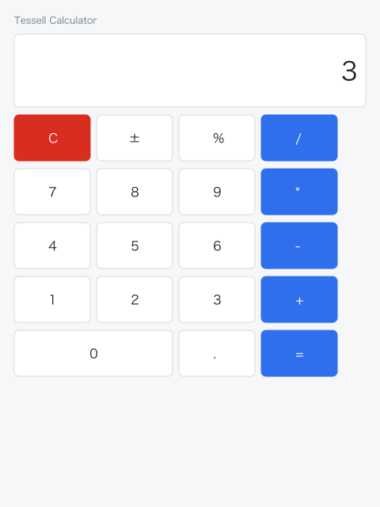
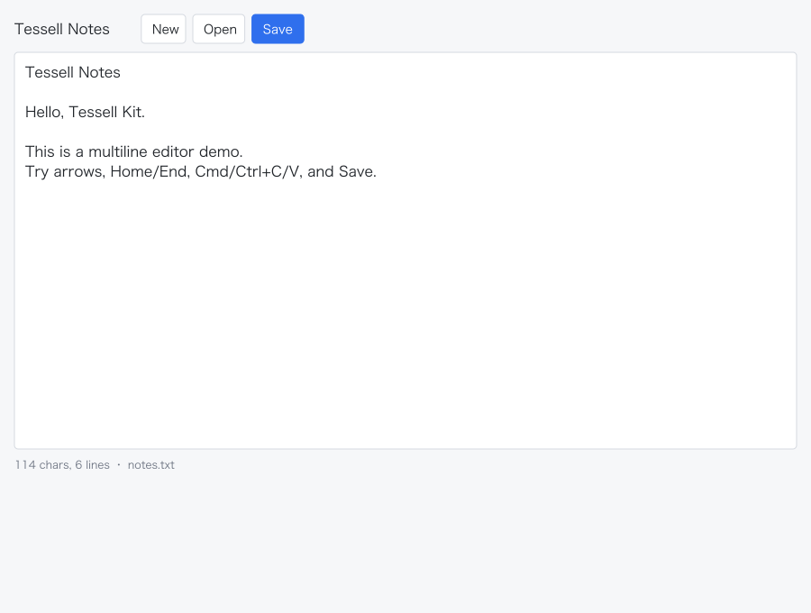

示例应用
两个可运行的 Kit app demo：计算器与多行文本编辑器。它们使用 SDL2 窗口 + OpenGL 宿主，组件与状态逻辑走 Tessell Kit；当前窗口宿主只存在于 examples/，不进入 shard 核心（计划提升为可选 tessell/platform/sdl2，见跨平台方案）。
运行
macOS（Homebrew SDL2）：
./tools/run_kit_demo.sh examples/app_calculator.cr
./tools/run_kit_demo.sh examples/app_text_editor.cr
或手动：
crystal run examples/app_calculator.cr --link-flags "-L/opt/homebrew/lib"
Windows：安装 SDL2 开发库（msys2/ucrt64 或官方 dev 包），确保 SDL2.dll 在 PATH 或 exe 同目录，然后：
crystal run examples/app_calculator.cr
Linux（Ubuntu/Debian，X11/XWayland；待实测）：
sudo apt install libsdl2-dev libfreetype6-dev libharfbuzz-dev libgl1-mesa-dev
crystal run examples/app_calculator.cr
无窗口预览：
crystal run tools/kit_app_previews.cr
# 输出 site/previews/calculator-app.svg 与 text-editor-app.svg
计算器

- 四则运算、小数、正负号、百分比、退格、清空。
- 鼠标点击按钮；键盘数字与
+ - * /；Enter 求值；Esc/C 清空；Backspace 退格。 - 状态在
TessellApps::CalculatorState，UI 在CalculatorApp；不依赖 SDL 可单独测试。
代码：examples/app_calculator.cr、examples/apps/calculator_app.cr。
文本编辑器

- 多行编辑、光标/选区、横向/纵向滚动、Home/End、方向键、Shift 选区。
- Cmd/Ctrl+A/C/X/V 通过
Kit::Clipboard；SDL 宿主注入系统剪贴板。 - New/Open/Save 操作当前目录的
notes.txt；打开后编辑器自动获得焦点。 - 多行
EditorView是 demo 级组件，复用Kit::TextEditing的 grapheme 光标/删除；不是 Kit 公共组件。
代码：examples/app_text_editor.cr、examples/apps/text_editor_app.cr。
宿主与验证
- SDL 宿主：examples/lib/kit_sdl_host.cr。
- 文本渲染走核心 FreeType/HarfBuzz +
GLBackend；本次同时修正 FreeTypeFT_Long/FT_Pos的 LP64 布局，macOS 已实测测字、栅格化与上屏。 GLPainter把 Kit 形状命令交给GLBackend#draw_draw_list，文本用TextRenderer+ atlas 批次。- 逻辑测试：
crystal spec spec/apps。 - 真实窗口自动跑 2 帧并截图：
crystal run examples/app_calculator.cr --link-flags "-L/opt/homebrew/lib" -- \
--frames=3 --screenshot=/tmp/calculator.ppm
ffmpeg -y -i /tmp/calculator.ppm /tmp/calculator.png
跨平台状态
| 平台 | SDL2 demo | 说明 |
|---|---|---|
| macOS arm64 | 已实测 | 计算器/编辑器真实窗口、文本上屏、截图通过 |
| Windows x64 | 待验证 | 现有真实窗口证据来自 Win32/WGL examples/app_demo.cr，不是 SDL2 demo |
| Linux x64 | 待验证 | 需要 SDL2、OpenGL/GLX 与 X11/XWayland；尚无 GUI 运行证据 |
三平台收口方案、L0/L1/L2/L3 支持级别和工作包见 跨平台方案。
限制
- 当前 SDL2 只是 demo 宿主；计划提升为可选平台宿主，核心仍不依赖 SDL2。Windows/Linux 需要单独安装 SDL2。
- 未接平台 IME composition；SDL_TEXTINPUT 可输入普通文本，但复杂输入法状态未验证。
- 未接屏幕阅读器 provider；只有进程内 A11y 树。
- 文本编辑器 Save/Open 固定
notes.txt，没有撤销/重做、查找替换、自动换行与多文档。 - 真实窗口证据来自 macOS SDL2/OpenGL；Windows SDL2 与 Linux 窗口仍待验证。